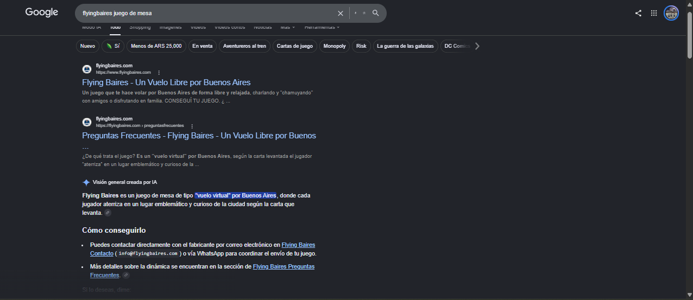

Presentación
Mi trayectoria
Hola me presento, mi nombre es Leonel Palavecino, tengo 20 años. Actualmente trabajo y juego al fútbol, además cuento con dos emprendimientos. El primero vendo botines de fútbol y el segundo hago landing pages y sitios institucionales. Con este curso de Full-Stack, busco poder ampliar mi conocimiento y poder crear en un futuro sitios para e-commerce.
Ahora me encuentro trabajando de atención al cliente en Santander, por lo cual veo algunos sistemas robustos, lo cual también me sirve de aprendizaje para otros idiosmas. Mi último trabajo de programación fue por Abril, el cual hice un sitio a mi padrino para que promocione y venda su juego de mesa que el creó (más a futuro podría integrar una base de datos con pago). Les paso el link para que puedan verlo: flyingbaires
